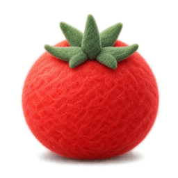

时间设置
长休息进度按当天计算；跨到第二天会自动从零开始。
自动流程
专注伙伴
三套已确认外观自动轮换：围巾写计划、耳机电脑、云朵小桌学习。
每轮专注换一位伙伴；暂停、继续和重置时保持当前外观。
休息角色
至少选一个；取消当前角色只影响后续休息。
暂停 / 继续快捷键
默认不启用。输入含 Ctrl、Alt 或 Shift 的组合键。

长休息进度按当天计算；跨到第二天会自动从零开始。
三套已确认外观自动轮换：围巾写计划、耳机电脑、云朵小桌学习。
每轮专注换一位伙伴；暂停、继续和重置时保持当前外观。
至少选一个；取消当前角色只影响后续休息。
默认不启用。输入含 Ctrl、Alt 或 Shift 的组合键。